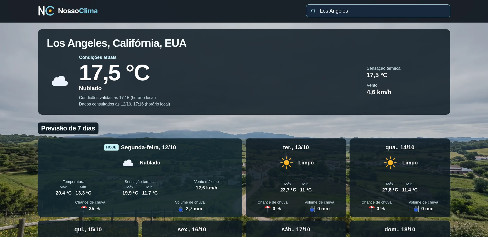

Aplicação web · Projeto em destaque
Previsão do tempo em português, rápida e acessível: busca de cidades, condições atuais e previsão de sete dias com dados da Open-Meteo. O fundo muda conforme o clima da cidade pesquisada, e o navegador lembra a última consulta para abrir já com a previsão atualizada.
Levei um app simples ao padrão de produção, com CI, cache, rate limiting, testes E2E, meta de LCP ≤ 2,5 s no mobile e atenção à LGPD.
